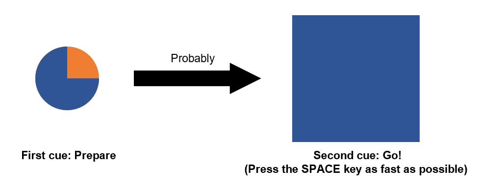
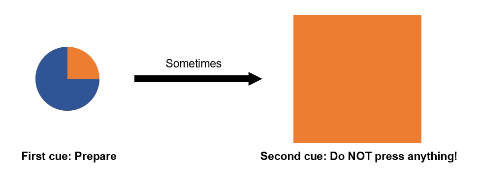
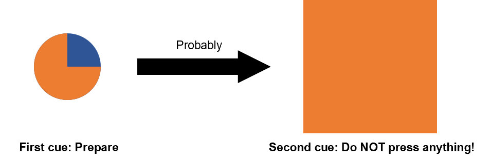
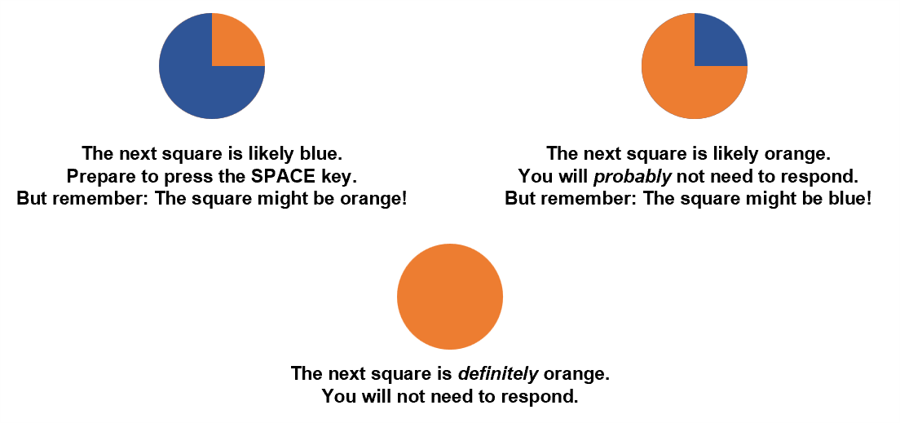

<!DOCTYPE html>
<html>
  <head>
    <title>Go/No-go</title>
    <script src="jspsych/jspsych.js"></script>
    <script src="jspsych/plugin-fullscreen.js"></script>
    <script src="jspsych/plugin-html-keyboard-response.js"></script>
    <script src="jspsych/plugin-image-keyboard-response.js"></script>
    <script src="jspsych/plugin-preload.js"></script>
    <script src="jspsych/plugin-call-function.js"></script>
    <link href="jspsych/jspsych.css" rel="stylesheet" type="text/css" />

    <script src="trial_seq/go_nogo_calib1.json"></script>
  </head>
  <body></body>
  <script>
  
  //console.log(trial_param);

  var rt_goal = 700; // should be based on the standard RT task (e.g., 125% of mean RT)

  var n_trials=trial_param.length;
    /* initialize jsPsych */
    var jsPsych = initJsPsych({
        on_finish: function() {
            //jsPsych.data.displayData('csv');
        }
    });

    /* preload images */
    var preload = {
        type: jsPsychPreload,
        images: [
            // instruction images
            'img/cue2BLUE_cue2ORANGE.png',
            'img/cue1BLUEorange_cue2BLUE.png',
            'img/cue1BLUEorange_cue2ORANGE.png',
            'img/cue1ORANGEblue_cue2ORANGE.png',
            'img/cue1ORANGEblue_cue2BLUE.png',
            'img/cue1ORANGE_cue2ORANGE.png',
            'img/cue1s_BLUEorange_ORANGEblue_ORANGE.png',
            
            // task images
            'img/cue1_blue.png',
            'img/cue1_orange.png',
            'img/cue1_blueHigh_orangeLow.png',
            'img/cue1_orangeHigh_blueLow.png',
            'img/cue2_blue.png',
            'img/cue2_orange.png',
        ],
        
    };
    console.log(preload);

    /* enter full screen mode */
    var enter_fullscreen = {
        type: jsPsychFullscreen,
        fullscreen_mode: true
    }

    /* define welcome message trial */
    var welcome = {
        type: jsPsychHtmlKeyboardResponse,
        stimulus: "Welcome to the experiment. Press any key to begin."
    };
    
    /* define instructions trial */
    // Go vs No-Go cues
    var instructions_1 = {
        type: jsPsychHtmlKeyboardResponse,
        stimulus: `
        <p>In this part of the experiment, you will still press the SPACE key</p>
        <p>as fast as you can when the <strong>blue square</strong> appears.</p>
        <p>However, this time there is a trick: If the square is <strong>orange</strong>, do NOT press any key!</p>
        
        <div style='float: center'>
            </img>
        </div>

        <p>Press any key to continue.</p>
        `,
        
    };
    
    // Mostly Go
    var instructions_2 = {
        type: jsPsychHtmlKeyboardResponse,
        stimulus: `
        <p>Like before, a circle will appear just before the blue/orange square</p>
        <p>This time, the colors of the circle give you a hint about</p>
        <p>whether the next square will be blue or orange.</p> 
        
        <p>If the circle is mostly <strong>blue</strong>, the following square will probably also be <strong>blue</strong>,</p>
        <p>so prepare to respond <i>quickly</i> when the blue square appears.</p>
        
        <div style='float: center'>
            </img>
        </div>

        <p>BUT BE CAREFUL: It's less likely, but sometimes an <strong>orange square</strong> </p>
        <p>will appear after the "mostly blue" circle.</p>
        <p>Remember: When you see an orange square, STOP your response and don't press any key!</p>

        <div style='float: center'>
            </img>
        </div>
        
        <p>Press any key to continue.</p>
        `
        
    };

    // Mostly No-Go
    var instructions_3 = {
        type: jsPsychHtmlKeyboardResponse,
        stimulus: `
        
        <p>If the initial circle is mostly <strong>orange</strong>,</p>
        <p>the upcoming square will probably also be <strong>orange</strong>,</p>
        <p>so you <i>probably</i> will not need to respond.</p>
        
        <div style='float: center'>
            </img>
        </div>

        <p>BUT WATCH OUT: Sometimes a <strong>blue square</strong></p>
        <p>will appear after the "mostly orange" circle!</p>
        <p>Remember: Any time you see the blue square,</p>
        <p>press the SPACE key as fast as possible!</p>

        <div style='float: center'>
            </img>
        </div>
        
        <p>Press any key to continue.</p>
        `,
    };

    // Only No-Go
    var instructions_4 = {
        type: jsPsychHtmlKeyboardResponse,
        stimulus: `
        
        <p>Sometimes the first cirle will be <strong>all orange</strong>.</p>
        <p>This means that the next square will <i>definitely</i> be <strong>orange</strong>,</p>
        <p>and <i>never</i> blue,</p>
        <p>so you know for sure that you don't need to respond.</p>
        
        <div style='float: center'>
            </img>
        </div>
        
        <p>Press any key to continue.</p>
        `,
        
    };

    // Instruction summary
    var instructions_5 = {
        type: jsPsychHtmlKeyboardResponse,
        stimulus: `
        
        <p>To summarize these instructions:</p>
        <p>Two cues will appear one after another: first a circle, then a square.</p>
        <p>You need to press the SPACE key as fast as you can when the second square is <strong>blue</strong>.</p>
        <p>If the square is <strong>orange</strong>, do not press any key</p>
        
        <div style='float: center'>
            </img>
        </div>

        <p>The color of the first cue, the circle, will hint if the next square is blue or orange:</p>

        <div style='float: center'>
            </img>
        </div>

        <p>Press any key to begin.</p>
        `,
        
        post_trial_gap: 2000
    };

    /* define trial info array for timeline variables */
    var trial_info = [];
    for (j = 0; j < n_trials; j++) {
        trial_info[j] = {
            trial_num: trial_param[j].trial_num,
            cue1_stimulus: "img/"+trial_param[j].cue1_stimulus+".png",
            cue1_duration: trial_param[j].cue1_duration,
            isi: trial_param[j].isi, // inter-stimulus-interval
            cue2_stimulus: "img/"+trial_param[j].cue2_stimulus+".png",
            cue2_duration: trial_param[j].cue2_duration,
            iti: trial_param[j].iti, // inter-trial-interval
            correct_response: trial_param[j].correct_response,
        };
    }

    /* define cue1 and cue2 events, together with feedback */
    var cue1 = {
        type: jsPsychImageKeyboardResponse,
        //stimulus: '<div style="font-size:60px;">+</div>',
        stimulus: jsPsych.timelineVariable('cue1_stimulus'),
        choices: "NO_KEYS",
        trial_duration: jsPsych.timelineVariable('cue1_duration'),
        post_trial_gap: jsPsych.timelineVariable('isi'),
        data: {
            task: 'cue1'
        },

        on_start: function(data){
            
            var today = new Date();
            var time_now = today.getHours() + ":" + today.getMinutes() + ":" + today.getSeconds() + ":" + today.getMilliseconds();
            
            data.Time_TrialStart = time_now

            console.log("Start time: " + data.Time_TrialStart)
        }
    };

    var cue2 = {
        type: jsPsychImageKeyboardResponse,
        stimulus: jsPsych.timelineVariable('cue2_stimulus'),
        choices: ' ',
        trial_duration: jsPsych.timelineVariable('cue2_duration'),
        
        data: {
            task: 'cue2',

            // To save all relevant data of a trial (including from cue1)
            trial_num: jsPsych.timelineVariable('trial_num'),
            cue1_stimulus: jsPsych.timelineVariable('cue1_stimulus'),
            cue1_duration: jsPsych.timelineVariable('cue1_duration'),
            isi: jsPsych.timelineVariable('isi'),

            cue2_stimulus: jsPsych.timelineVariable('cue2_stimulus'),
            cue2_duration: jsPsych.timelineVariable('cue2_duration'),
            iti: jsPsych.timelineVariable('iti'),
            correct_response: jsPsych.timelineVariable('correct_response'),            
        },
        
        on_finish: function(data){
            
            var today = new Date();
            var time_now = today.getHours() + ":" + today.getMinutes() + ":" + today.getSeconds() + ":" + today.getMilliseconds();
            
            data.TrialNum = data.trial_num
            data.Cue1_Stimulus = data.cue1_stimulus
            data.Cue1_Duration = data.cue1_duration
            data.ISI = data.isi

            data.Cue2_Stimulus = data.cue2_stimulus
            data.Cue2_Duration = data.cue2_duration
            data.ITI = data.iti
            
            data.Correct_Response = data.correct_response
            data.Response = data.response
            data.IsCorrect = jsPsych.pluginAPI.compareKeys(data.response, data.correct_response) // change to incorporate reation time as well!!!
            
            data.RT = jsPsych.data.get().last(1).values()[0].rt

            data.Time_TrialEnd = time_now

            console.log("End time: " + data.Time_TrialEnd)
        }
        
    };

    var feedback = {
        type: jsPsychHtmlKeyboardResponse,
        
        trial_duration: 1500,
        post_trial_gap: jsPsych.timelineVariable('iti'), 

        stimulus: function() {
            
            if ( jsPsych.data.get().last(1).values()[0].IsCorrect & jsPsych.data.get().last(1).values()[0].rt < rt_goal) {
                return `<p style="font-size:70px; color: green">Correct!</p>
                        <p style="font-size:80px; color: green">+1</p>`;
            } else if ( jsPsych.data.get().last(1).values()[0].IsCorrect & jsPsych.data.get().last(1).values()[0].rt > rt_goal) {
                return `<p style="font-size:70px; color: black">Try to respond faster</p>
                        <p style="font-size:80px; color: red">-1</p>`;
            } else {
                if (jsPsych.data.get().last(1).values()[0].response == " ") {
                    return `<p style="font-size:70px; color: black">Do not respond on</p>
                            <p style="font-size:70px; color: black"><strong>orange</strong> squares</p>
                            <p style="font-size:80px; color: red">-1</p>`;
                } else {
                    return `<p style="font-size:70px; color: black">Press the key</p>
                            <p style="font-size:70px; color: black">on <strong>blue</strong> squares</p>
                            <p style="font-size:80px; color: red">-1</p>`;
                }
            }
            
        }
    };

    /* define experiment (trial) procedure */
    var experiment_procedure = {
        timeline: [cue1, cue2, feedback],
        timeline_variables: trial_info,
        randomize_order: false,
        repetitions: 1
    };

    /* save data */
    var save_data = {
		type: jsPsychCallFunction,
		func: function(){
            //
            jsPsych.data.get().filter({task: 'cue2'}).ignore([
                'internal_node_id',
                'trial_type',
                'trial_index',
                'task',
                'stimulus',
                'rt',
                'response',
                'trial_num',
                'cue1_stimulus',
                'cue1_duration',
                'isi',
                'cue2_stimulus',
                'cue2_duration',
                'iti',
                'correct_response',
            ]).localSave('csv','myData_go_nogo_calib_task_testTime_21Aug23.csv');		
		},
	};

    /* define debrief */
    var debrief_block = {
        type: jsPsychHtmlKeyboardResponse,
        stimulus: function() {
            var trials = jsPsych.data.get().filter({task: 'cue2'});
            var correct_trials = trials.filter({IsCorrect: true});
            var accuracy = Math.round(correct_trials.count() / trials.count() * 100);
            var rt = Math.round(correct_trials.select('RT').mean());

            return `<p>You responded correctly on ${accuracy}% of the trials.</p>
                <p>Your average response time was ${rt}ms.</p>
                <p>Press any key to complete the experiment. Thank you!</p>`;

        }
    };

    /* exit full screen mode */
    var exit_fullscreen = {
        type: jsPsychFullscreen,
        fullscreen_mode: false,
        delay_after: 0
    }

    /* create timeline */
    var timeline = [];
    timeline.push(preload);
    timeline.push(enter_fullscreen);
    timeline.push(welcome);
    timeline.push(instructions_1);
    timeline.push(instructions_2);
    timeline.push(instructions_3);
    timeline.push(instructions_4);
    timeline.push(instructions_5);
    timeline.push(experiment_procedure);
    timeline.push(save_data);
    timeline.push(debrief_block);
    timeline.push(exit_fullscreen);
    
    console.log(timeline);

    /* start the experiment */
    jsPsych.run(timeline);

  </script>
</html>

